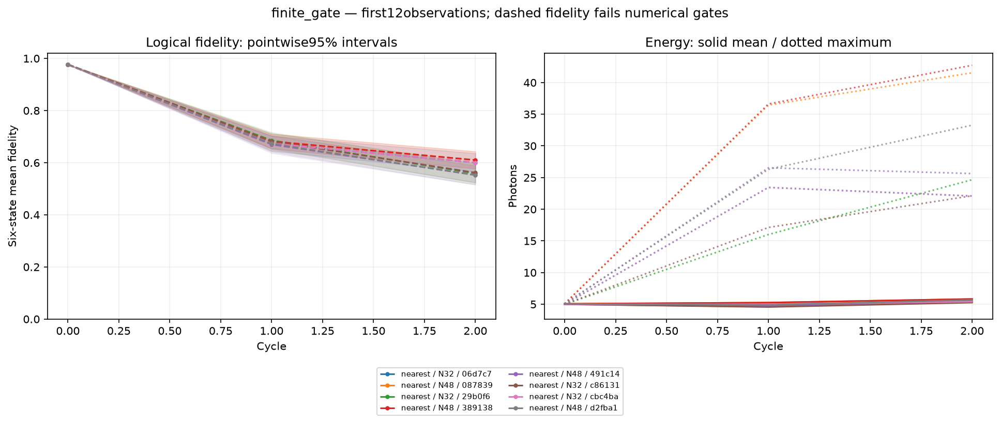
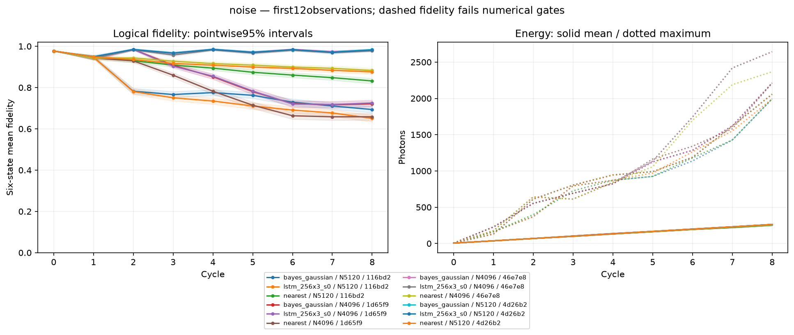
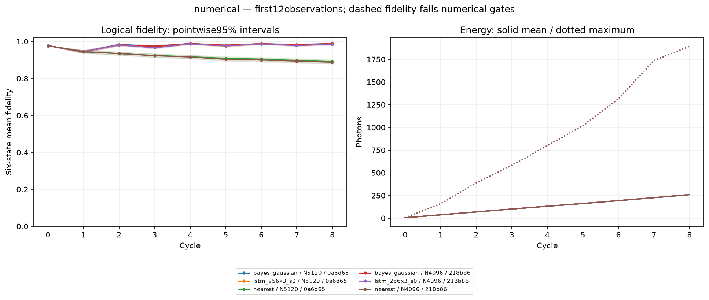
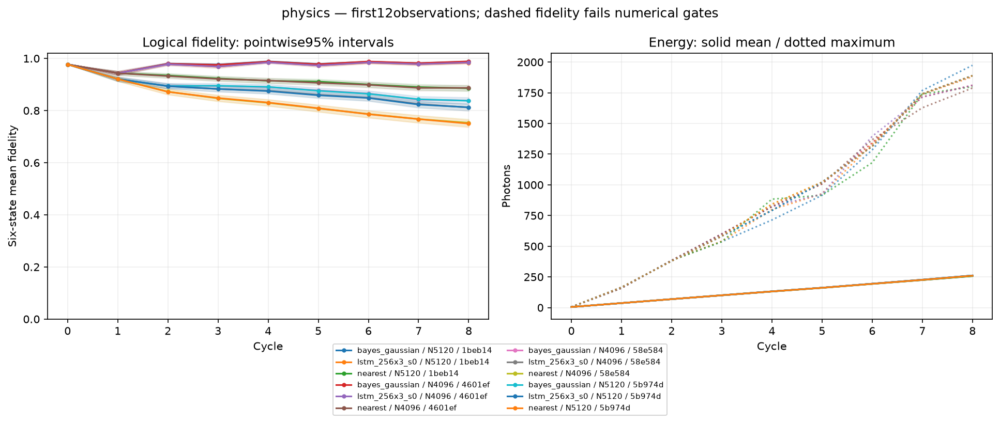

EC2 status: running_production_sweeps. Updated 2026-11-20T19:37:09.128035+00:00.
Curves appear as each decoder finishes, before the full suite completes. Production numerical/physics/noise runs have8cycles plus initialization; finite-gate controls have their own2cycle budget. Failed numerical gates mark diagnostic curves.

| Decoder | Cutoff | Trajectories | Cycles | Stage gates | Final fidelity |
|---|---|---|---|---|---|
| nearest | 32 | 96 | 2 | failed; diagnostic | 60.0420% |
| nearest | 48 | 96 | 2 | failed; diagnostic | 61.0041% |
| nearest | 32 | 96 | 2 | failed; diagnostic | 55.8785% |
| nearest | 48 | 96 | 2 | failed; diagnostic | 60.9965% |
| nearest | 48 | 96 | 2 | failed; diagnostic | 55.2698% |
| nearest | 32 | 96 | 2 | failed; diagnostic | 56.1708% |
| nearest | 32 | 96 | 2 | failed; diagnostic | 60.0433% |
| nearest | 48 | 96 | 2 | failed; diagnostic | 55.2050% |

| Decoder | Cutoff | Trajectories | Cycles | Stage gates | Final fidelity |
|---|---|---|---|---|---|
| bayes_gaussian | 5120 | 3072 | 8 | pass | 69.3671% |
| lstm_256x3_s0 | 5120 | 3072 | 8 | pass | 65.0710% |
| nearest | 5120 | 3072 | 8 | pass | 83.2129% |
| bayes_gaussian | 4096 | 3072 | 8 | pass | 72.1421% |
| lstm_256x3_s0 | 4096 | 3072 | 8 | pass | 72.5269% |
| nearest | 4096 | 3072 | 8 | pass | 65.8451% |
| bayes_gaussian | 4096 | 3072 | 8 | pass | 98.2632% |
| lstm_256x3_s0 | 4096 | 3072 | 8 | pass | 97.7491% |
| nearest | 4096 | 3072 | 8 | pass | 88.2749% |
| bayes_gaussian | 5120 | 3072 | 8 | pass | 98.4159% |
| lstm_256x3_s0 | 5120 | 3072 | 8 | pass | 98.1583% |
| nearest | 5120 | 3072 | 8 | pass | 87.6307% |
| bayes_gaussian | 4096 | 3072 | 8 | pass | 98.3949% |
| lstm_256x3_s0 | 4096 | 3072 | 8 | pass | 98.1690% |
| nearest | 4096 | 3072 | 8 | pass | 87.3319% |
| bayes_gaussian | 5120 | 3072 | 8 | pass | 86.4625% |
| lstm_256x3_s0 | 5120 | 3072 | 8 | pass | 86.0556% |
| nearest | 5120 | 3072 | 8 | pass | 81.8139% |
| bayes_gaussian | 4096 | 3072 | 8 | pass | 86.4428% |
| lstm_256x3_s0 | 4096 | 3072 | 8 | pass | 86.2846% |
| nearest | 4096 | 3072 | 8 | pass | 81.6553% |
| bayes_gaussian | 4096 | 3072 | 8 | pass | 98.8304% |
| lstm_256x3_s0 | 4096 | 3072 | 8 | pass | 98.5064% |
| nearest | 4096 | 3072 | 8 | pass | 88.7839% |
| bayes_gaussian | 5120 | 3072 | 8 | pass | 98.2639% |
| lstm_256x3_s0 | 5120 | 3072 | 8 | pass | 97.7803% |
| nearest | 5120 | 3072 | 8 | pass | 88.5643% |
| bayes_gaussian | 4096 | 3072 | 8 | pass | 69.2346% |
| lstm_256x3_s0 | 4096 | 3072 | 8 | pass | 64.9694% |
| nearest | 4096 | 3072 | 8 | pass | 82.7933% |
| bayes_gaussian | 5120 | 3072 | 8 | pass | 98.8166% |
| lstm_256x3_s0 | 5120 | 3072 | 8 | pass | 98.5597% |
| nearest | 5120 | 3072 | 8 | pass | 88.2370% |
| bayes_gaussian | 4096 | 3072 | 8 | pass | 98.8501% |
| lstm_256x3_s0 | 4096 | 3072 | 8 | pass | 98.3665% |
| nearest | 4096 | 3072 | 8 | pass | 88.2041% |
| bayes_gaussian | 5120 | 3072 | 8 | pass | 98.8344% |
| lstm_256x3_s0 | 5120 | 3072 | 8 | pass | 98.5122% |
| nearest | 5120 | 3072 | 8 | pass | 89.0996% |

| Decoder | Cutoff | Trajectories | Cycles | Stage gates | Final fidelity |
|---|---|---|---|---|---|
| bayes_gaussian | 5120 | 3072 | 8 | pass | 98.8344% |
| lstm_256x3_s0 | 5120 | 3072 | 8 | pass | 98.5122% |
| nearest | 5120 | 3072 | 8 | pass | 89.0996% |
| bayes_gaussian | 4096 | 3072 | 8 | pass | 98.8304% |
| lstm_256x3_s0 | 4096 | 3072 | 8 | pass | 98.5064% |
| nearest | 4096 | 3072 | 8 | pass | 88.7839% |

| Decoder | Cutoff | Trajectories | Cycles | Stage gates | Final fidelity |
|---|---|---|---|---|---|
| bayes_gaussian | 5120 | 3072 | 8 | pass | 98.7910% |
| lstm_256x3_s0 | 5120 | 3072 | 8 | pass | 98.3380% |
| nearest | 5120 | 3072 | 8 | pass | 88.5364% |
| bayes_gaussian | 4096 | 3072 | 8 | pass | 98.8537% |
| lstm_256x3_s0 | 4096 | 3072 | 8 | pass | 98.4312% |
| nearest | 4096 | 3072 | 8 | pass | 88.6999% |
| bayes_gaussian | 4096 | 3072 | 8 | pass | 83.8459% |
| lstm_256x3_s0 | 4096 | 3072 | 8 | pass | 81.1881% |
| nearest | 4096 | 3072 | 8 | pass | 75.3058% |
| bayes_gaussian | 5120 | 3072 | 8 | pass | 83.7692% |
| lstm_256x3_s0 | 5120 | 3072 | 8 | pass | 81.2530% |
| nearest | 5120 | 3072 | 8 | pass | 74.9903% |
| bayes_gaussian | 4096 | 3072 | 8 | pass | 98.4973% |
| lstm_256x3_s0 | 4096 | 3072 | 8 | pass | 98.2072% |
| nearest | 4096 | 3072 | 8 | pass | 88.0574% |
| bayes_gaussian | 5120 | 3072 | 8 | pass | 98.5751% |
| lstm_256x3_s0 | 5120 | 3072 | 8 | pass | 98.1740% |
| nearest | 5120 | 3072 | 8 | pass | 88.3116% |
| bayes_gaussian | 4096 | 3072 | 8 | pass | 98.8304% |
| lstm_256x3_s0 | 4096 | 3072 | 8 | pass | 98.5064% |
| nearest | 4096 | 3072 | 8 | pass | 88.7839% |
| bayes_gaussian | 5120 | 3072 | 8 | pass | 98.6751% |
| lstm_256x3_s0 | 5120 | 3072 | 8 | pass | 98.3601% |
| nearest | 5120 | 3072 | 8 | pass | 87.7844% |
| bayes_gaussian | 4096 | 3072 | 8 | pass | 98.7084% |
| lstm_256x3_s0 | 4096 | 3072 | 8 | pass | 98.6125% |
| nearest | 4096 | 3072 | 8 | pass | 88.2297% |
| bayes_gaussian | 5120 | 3072 | 8 | pass | 98.6807% |
| lstm_256x3_s0 | 5120 | 3072 | 8 | pass | 98.5212% |
| nearest | 5120 | 3072 | 8 | pass | 88.1967% |
| bayes_gaussian | 4096 | 3072 | 8 | pass | 97.9618% |
| lstm_256x3_s0 | 4096 | 3072 | 8 | pass | 97.2883% |
| nearest | 4096 | 3072 | 8 | pass | 85.8736% |
| bayes_gaussian | 5120 | 3072 | 8 | pass | 98.8344% |
| lstm_256x3_s0 | 5120 | 3072 | 8 | pass | 98.5122% |
| nearest | 5120 | 3072 | 8 | pass | 89.0996% |
| bayes_gaussian | 4096 | 3072 | 8 | pass | 98.5909% |
| lstm_256x3_s0 | 4096 | 3072 | 8 | pass | 98.1657% |
| nearest | 4096 | 3072 | 8 | pass | 87.6706% |
Suite progress and full reports · Observed metrics JSON
These observations do not certify scoring refinement, cutoff equivalence, or independent instrument coverage. Those checks are separate in the full suite report.